两种类型, 两种沟道, 共4类MOSFET: 其中, 增强型亦称为EMOS(Enhance); 耗尽型亦称为DMOS(Deplote).
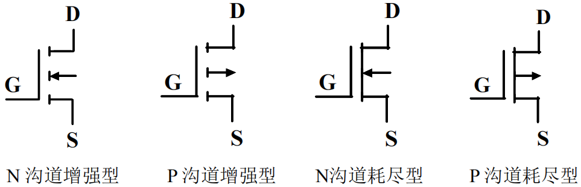
载流子类型: 沟道中的多子.
饱和状态条件: 且 .
对于任意工作模式, 均有:
是MOS管固有参数, 记为 .
非饱和区: 通常很小, .
饱和区: 可以认为, 在进入饱和区后保持不变. 取 , 可得: .
MOS管有沟道长度调制效应. 添加修正后, 饱和区的模型改写为: .
等效电路: 压控电流源.
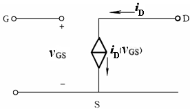
取 曲线的切线.
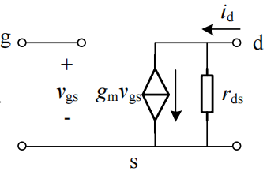
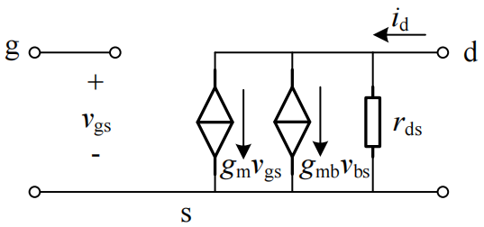
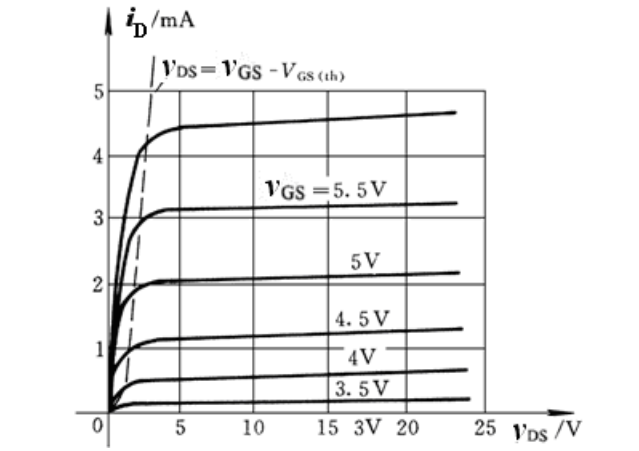
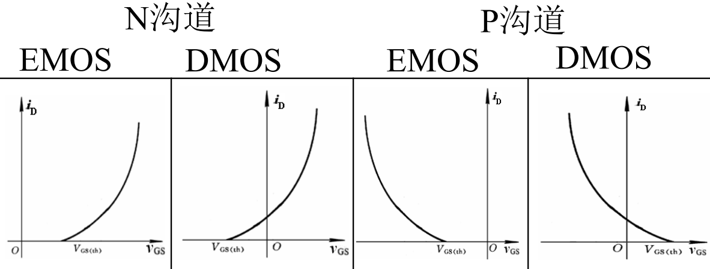
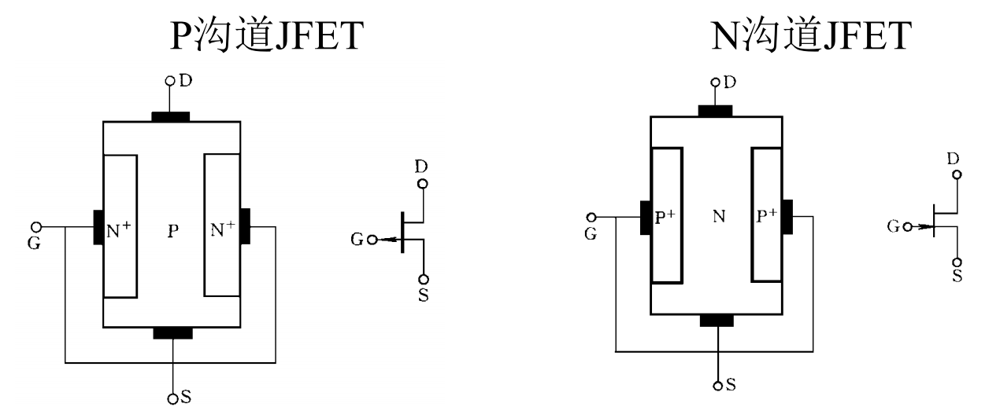
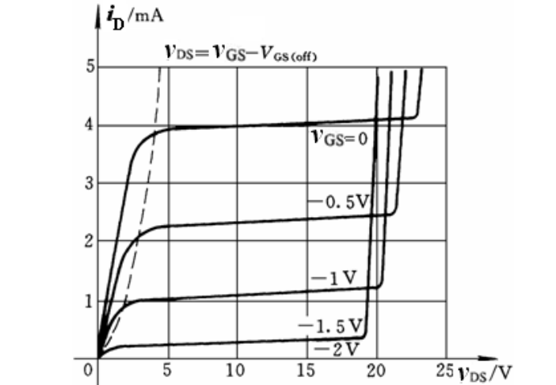
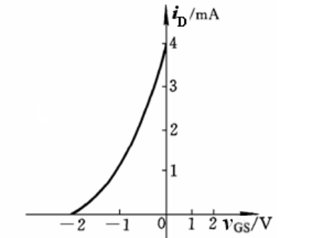
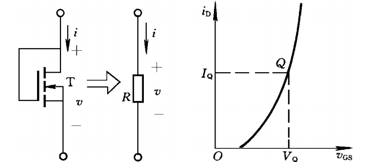
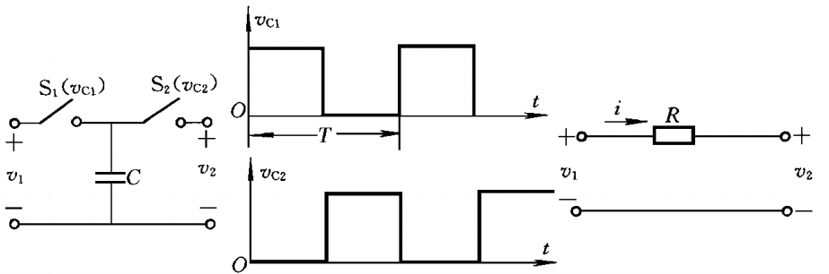
下一章: 放大器基础